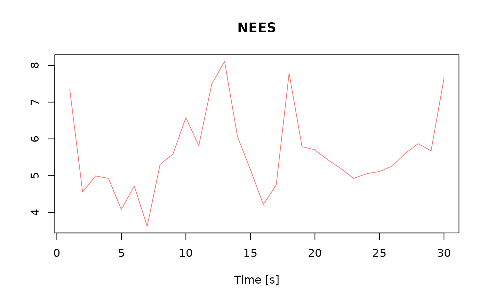

Compute Normalized Estimation Errror Squared (NEES)
compute_nees(sols, step = 50, idx = 1:6)The set of solutions returned by the navigation function
do it for one sample out of step
Components of the states to be considered (default: position and orientation)
# load data
data("lemniscate_traj_ned")
head(lemniscate_traj_ned)
#> t x y z roll pitch_sm yaw
#> [1,] 0.00 0.00000000 0.00000000 0 0.0000000000 0.000000e+00 0.7853979
#> [2,] 0.01 0.05235987 0.05235984 0 0.0001821107 8.255405e-05 0.7853971
#> [3,] 0.02 0.10471968 0.10471945 0 0.0003642249 1.650525e-04 0.7853946
#> [4,] 0.03 0.15707937 0.15707860 0 0.0005463461 2.474976e-04 0.7853905
#> [5,] 0.04 0.20943890 0.20943706 0 0.0007284778 3.298918e-04 0.7853847
#> [6,] 0.05 0.26179819 0.26179460 0 0.0009106235 4.122374e-04 0.7853773
traj = make_trajectory(data = lemniscate_traj_ned, system = "ned")
timing = make_timing(nav.start = 0, # time at which to begin filtering
nav.end = 600,
freq.imu = 100, # frequency of the IMU, can be slower wrt trajectory frequency
freq.gps = 1, # GNSS frequency
freq.baro = 1, # barometer frequency (to disable, put it very low, e.g. 1e-5)
gps.out.start = 60, # to simulate a GNSS outage, set a time before nav.end
gps.out.end = 120)
# create sensor for noise data generation
snsr.mdl=list()
# this uses a model for noise data generation
acc.mdl = WN(sigma2 = 5.989778e-05) + AR1(phi = 9.982454e-01, sigma2 = 1.848297e-10) + AR1(phi = 9.999121e-01, sigma2 = 2.435414e-11) + AR1(phi = 9.999998e-01, sigma2 = 1.026718e-12)
gyr.mdl = WN(sigma2 = 1.503793e-06) + AR1(phi = 9.968999e-01, sigma2 = 2.428980e-11) + AR1(phi = 9.999001e-01, sigma2 = 1.238142e-12)
snsr.mdl$imu = make_sensor(name="imu", frequency=timing$freq.imu, error_model1=acc.mdl, error_model2=gyr.mdl)
# RTK-like GNSS
gps.mdl.pos.hor = WN(sigma2 = 0.025^2)
gps.mdl.pos.ver = WN(sigma2 = 0.05^2)
gps.mdl.vel.hor = WN(sigma2 = 0.01^2)
gps.mdl.vel.ver = WN(sigma2 = 0.02^2)
snsr.mdl$gps = make_sensor(name="gps",
frequency=timing$freq.gps,
error_model1=gps.mdl.pos.hor,
error_model2=gps.mdl.pos.ver,
error_model3=gps.mdl.vel.hor,
error_model4=gps.mdl.vel.ver)
# Barometer
baro.mdl = WN(sigma2=0.5^2)
snsr.mdl$baro = make_sensor(name="baro", frequency=timing$freq.baro, error_model1=baro.mdl)
# define sensor for Kalmna filter
KF.mdl = list()
# make IMU sensor
KF.mdl$imu = make_sensor(name="imu", frequency=timing$freq.imu, error_model1=acc.mdl, error_model2=gyr.mdl)
KF.mdl$gps = snsr.mdl$gps
KF.mdl$baro = snsr.mdl$baro
# perform navigation simulation
num.runs = 10 # number of Monte-Carlo simulations
res = navigation(traj.ref = traj,
timing = timing,
snsr.mdl = snsr.mdl,
KF.mdl = KF.mdl,
num.runs = num.runs,
noProgressBar = TRUE,
PhiQ_method = "4", # order of the Taylor expansion of the matrix exponential used to compute Phi and Q matrices
compute_PhiQ_each_n = 10, # compute new Phi and Q matrices every n IMU steps (execution time optimization)
parallel.ncores=1,
P_subsampling = timing$freq.imu) # keep one covariance every second
#> Monte-Carlo runs...
#>
|
| | 0%
|
| | 0%
|
| | 0%
|
| | 0%
|
| | 0%
|
| | 0%
|
| | 0%
|
| | 0%
|
| | 0%
|
| | 0%
nees = compute_nees(res, idx=1:6, step = 100)
#>
|
| | 0%
|
| | 1%
|
|= | 1%
|
|= | 2%
|
|== | 2%
|
|== | 3%
|
|== | 4%
|
|=== | 4%
|
|=== | 5%
|
|==== | 5%
|
|==== | 6%
|
|===== | 6%
|
|===== | 7%
|
|===== | 8%
|
|====== | 8%
|
|====== | 9%
|
|======= | 9%
|
|======= | 10%
|
|======= | 11%
|
|======== | 11%
|
|======== | 12%
|
|========= | 12%
|
|========= | 13%
|
|========= | 14%
|
|========== | 14%
|
|========== | 15%
|
|=========== | 15%
|
|=========== | 16%
|
|============ | 16%
|
|============ | 17%
|
|============ | 18%
|
|============= | 18%
|
|============= | 19%
|
|============== | 19%
|
|============== | 20%
|
|============== | 21%
|
|=============== | 21%
|
|=============== | 22%
|
|================ | 22%
|
|================ | 23%
|
|================ | 24%
|
|================= | 24%
|
|================= | 25%
|
|================== | 25%
|
|================== | 26%
|
|=================== | 26%
|
|=================== | 27%
|
|=================== | 28%
|
|==================== | 28%
|
|==================== | 29%
|
|===================== | 29%
|
|===================== | 30%
|
|===================== | 31%
|
|====================== | 31%
|
|====================== | 32%
|
|======================= | 32%
|
|======================= | 33%
|
|======================= | 34%
|
|======================== | 34%
|
|======================== | 35%
|
|========================= | 35%
|
|========================= | 36%
|
|========================== | 36%
|
|========================== | 37%
|
|========================== | 38%
|
|=========================== | 38%
|
|=========================== | 39%
|
|============================ | 39%
|
|============================ | 40%
|
|============================ | 41%
|
|============================= | 41%
|
|============================= | 42%
|
|============================== | 42%
|
|============================== | 43%
|
|============================== | 44%
|
|=============================== | 44%
|
|=============================== | 45%
|
|================================ | 45%
|
|================================ | 46%
|
|================================= | 46%
|
|================================= | 47%
|
|================================= | 48%
|
|================================== | 48%
|
|================================== | 49%
|
|=================================== | 49%
|
|=================================== | 50%
|
|=================================== | 51%
|
|==================================== | 51%
|
|==================================== | 52%
|
|===================================== | 52%
|
|===================================== | 53%
|
|===================================== | 54%
|
|====================================== | 54%
|
|====================================== | 55%
|
|======================================= | 55%
|
|======================================= | 56%
|
|======================================== | 56%
|
|======================================== | 57%
|
|======================================== | 58%
|
|========================================= | 58%
|
|========================================= | 59%
|
|========================================== | 59%
|
|========================================== | 60%
|
|========================================== | 61%
|
|=========================================== | 61%
|
|=========================================== | 62%
|
|============================================ | 62%
|
|============================================ | 63%
|
|============================================ | 64%
|
|============================================= | 64%
|
|============================================= | 65%
|
|============================================== | 65%
|
|============================================== | 66%
|
|=============================================== | 66%
|
|=============================================== | 67%
|
|=============================================== | 68%
|
|================================================ | 68%
|
|================================================ | 69%
|
|================================================= | 69%
|
|================================================= | 70%
|
|================================================= | 71%
|
|================================================== | 71%
|
|================================================== | 72%
|
|=================================================== | 72%
|
|=================================================== | 73%
|
|=================================================== | 74%
|
|==================================================== | 74%
|
|==================================================== | 75%
|
|===================================================== | 75%
|
|===================================================== | 76%
|
|====================================================== | 76%
|
|====================================================== | 77%
|
|====================================================== | 78%
|
|======================================================= | 78%
|
|======================================================= | 79%
|
|======================================================== | 79%
|
|======================================================== | 80%
|
|======================================================== | 81%
|
|========================================================= | 81%
|
|========================================================= | 82%
|
|========================================================== | 82%
|
|========================================================== | 83%
|
|========================================================== | 84%
|
|=========================================================== | 84%
|
|=========================================================== | 85%
|
|============================================================ | 85%
|
|============================================================ | 86%
|
|============================================================= | 86%
|
|============================================================= | 87%
|
|============================================================= | 88%
|
|============================================================== | 88%
|
|============================================================== | 89%
|
|=============================================================== | 89%
|
|=============================================================== | 90%
|
|=============================================================== | 91%
|
|================================================================ | 91%
|
|================================================================ | 92%
|
|================================================================= | 92%
|
|================================================================= | 93%
|
|================================================================= | 94%
|
|================================================================== | 94%
|
|================================================================== | 95%
|
|=================================================================== | 95%
|
|=================================================================== | 96%
|
|==================================================================== | 96%
|
|==================================================================== | 97%
|
|==================================================================== | 98%
|
|===================================================================== | 98%
|
|===================================================================== | 99%
|
|======================================================================| 99%
|
|======================================================================| 100%
#>
plot(nees)
